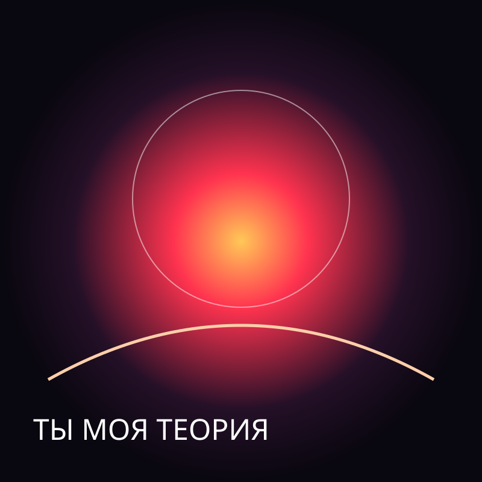
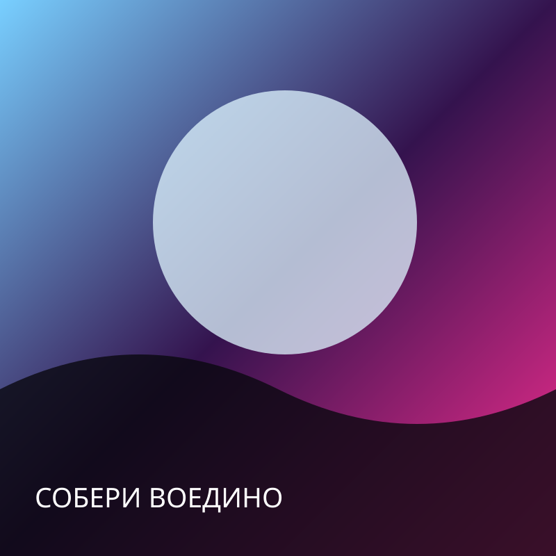
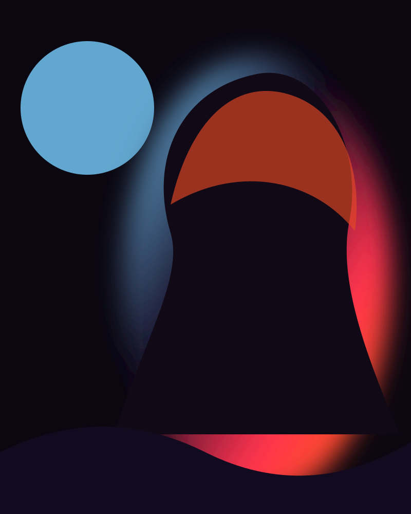

ЛЮСЯ ПИТЕРСКАЯ ◆ MUSIC ◆ VISUAL ART ◆ SAINT PETERSBURG ◆ ЛЮСЯ ПИТЕРСКАЯ ◆ MUSIC ◆ VISUAL ART ◆ SAINT PETERSBURG

НОВЫЙ РЕЛИЗ
Собери
воедино
УЖЕ В СЕТИ • 12.08.2026Песня о хрупких связях, которые собирают внутренний мир воедино.
СЛУШАТЬ НА ПЛОЩАДКАХДИСКОГРАФИЯ
МУЗЫКА
Я гадала по Луне
Люся ПитерскаяПульс Тишины
Люся ПитерскаяКак тебе такое, Илон Маск?
Люся Питерская
ОБ АРТИСТКЕ
ЛЮСЯ
ПИТЕРСКАЯ
Авторские песни, визуальные истории и эксперименты на границе музыки и цифрового искусства. Каждый трек получает собственный образ, настроение и маленькую вселенную.
ВСЕГДА НА СВЯЗИ
СЛУШАЙ. СМОТРИ.
ПОДПИСЫВАЙСЯ.
СОТРУДНИЧЕСТВО
СОЗДАДИМ
НОВУЮ ИСТОРИЮ
Музыка • коллаборации • видео • творческие проекты